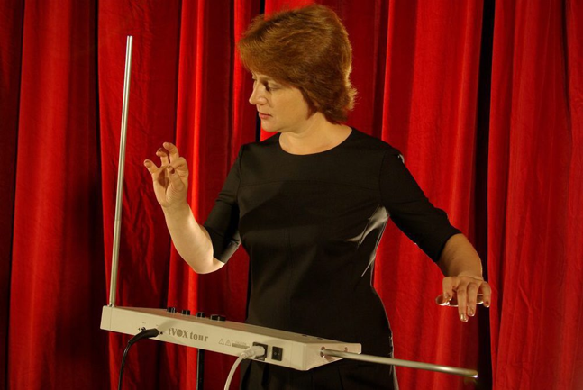

Projekt 2 Theremin
Melodische Klänge.
In diesem Projekt werden wir mit Ultrasonic ein Theremin basteln.
Bevor wir aber dieses Projekt anfangen schau dir das Tutorial an: Tutorial »
Hier ein kleiner Vorgeschmack wie es am Ende aussieht:
Sonic Pi - Musik Programmieren
Traditionelle Musikinstrumente wie Klavier, Gitarre, und Schlagzeug erzeugen verschiedene Klangfarben und Töne, die bei der Erzeugung von Liedern bekannt sind. Leider haben die meistens Personen sowohl den Zugriff auf diese Instrumente als auch die Fähigkeit diese zu spielen. Heutzutage gibt es aber eine einfachere Lösung nämlich: digitale Synthesizer, die es ermöglicht, Töne aus viele Instrumenten digital zu erzeugen. Eine bekannte Softwareanwendung ist Sonic Pi, die wir in diesem Projekt benutzen, um ein Lied zu erzeugen. Sonic Pi ist eine Applikation, die auf Windows, MacOS, und Raspberry Pi verfügbar ist. Wir werden diese Sonic Pi auf unserem Raspberry Pi installieren.
Sonic Pi installieren
-
Als erster Schritt müssen wir unser System aktualisieren. Dafür brauchen wir ein Tool: Terminal. Terminal ist eine textbasierte Ein-/Ausgabe-Schnittstelle für ein Computersystem. Wir können hier Befehle eingeben, um das System zu steuern oder Dateien zu bearbeiten. Um dieses Terminal zu finden, können wir die schwarze Box neben dem Raspberry Pi – Symbol klicken. So sieht ein Terminal aus:
-
Unten ist der Befehl zum Aktualisieren:
sudo apt update && sudo apt upgrade -yEs kann bis zu mehr als fünf Minute dauern. Wenn der grüne Textpi@rasberrypi:~$wieder erscheint, ist der Vorgang fertig. -
Wir können jetzt Sonic Pi installieren. Führe den unteren Befehl aus:
sudo apt-get install sonic-pi -
Wenn die Installation fertig ist, klicke auf Raspberry Pi - Symbol. Unter Entwicklung findest du Sonic Pi. Unser Sonic Pi ist bereits!
Mit Sonic Pi starten!
-
Um eine Musiknote zu erzeugen können wir die untere Zeile eingeben:
play 60Klicke auf Run Symbol und voila! Du hast deine erste Note programmiert! Du kannst die Zahl mit jeder runden Zahl ersetzen! Probiere das aus! Beobachte welche Zahlen erzeugen welche Note? Kannst du die Noten erkennen? Hier sind Tabelle von Sonic Pi, welche Zahl erzeugt welchen Ton: -
Jetzt versuch mehrere Musiknoten zu erzeugen:
play 40play 50play 60Was ist passiert? Hast du alle Musiknoten klar gehört? Nein? Warum nicht? -
Die Antwort ist: Sonic Pi hat zwar alle Noten nach einander gespielt, aber es war leider zu schnell, die einzige Note klar zu erkennen. Eine Lösung dafür ist ein Zeitabstand! Das Prinzip ist gleich, wie wenn wir echte Instrumente spielen, dann müssen wir auch Zeitabstand haben, um die Noten richtig zu hören und damit schöne Melodie zu erzeugen!
play 40sleep 1play 50sleep 1play 60Genauso wie beiplaykannst du die Zahl beisleepmit irgendeiner Zahl ersetzen. Was passiert, wenn du große Zahl und kleine Zahl eingibst? -
Jetzt können wir weiter synth experimentieren. Mit
synthkannst du andere Töne und Klang von unterschiedlichen Musikinstrumenten und Effekte erzeugen lassen. Deine Noten können sich dann als Klavier, Gitarre, usw. anhören. Folgende sind ein paar Beispiele vonsynth, die du in deinem Programm verwenden kannst:synth :pulseplay 40sleep 1play 50sleep 1play 60Hier sind noch andere Arte vonsynth, mit denen du weiter experimentieren kannst:synth :growlsynth :vowelsynth :saw -
Believe it or not: ganz viele Lieder auf dieser Welt bestehen nur aus 4 Noten! Was heißt das dann für unseres Programm? Das heißt: Ein Lied lässt sich nur aus Repetition dieser Noten zusammensetzen. Um diese Repetition zu erzeugen, kann man den Befehl unten benutzen:
4.times doplay 40sleep 1play 50sleep 1play 60sleep 1endDie Zahl vortimeskannst du mit anderer Zahl auch setzen. Je nachdem wie viele Repetition du machen willst. Versuch mal eine Repetition innerhalb anderer Repetition. Habt ihr die Syntax richtig hinbekommen? Welche Schwierigkeiten habt ihr dabei? -
Außer diese exakt bestimmte Repetition können wir auch eine ewige Loop laufen lassen. Diese Loop wird für immer laufen solange das Programm/Applikation nicht gestoppt oder geschlossen ist!
loop doplay 40sleep 1play 50sleep 1endDieseloopwird bei dem nächsten Schritt gebraucht! Also merk es euch mal!
Ultrasonic Theremin
Was ist überhaupt ein Theremin?
Theremin ist ein seltsames elektronisches Musikinstrument. Es ist das einzige berührungslose Musikinstrument. Sein Name geht auf den Erfinder, den Russen Lew Termen, zurück, der sich in den USA Leon Theremin nannte. Beim Theremin beeinflusst die elektrische Kapazität des menschlichen Körpers ein elektrisches Feld. Dabei steuert die Position der Hände gegenüber zwei Elektroden („Antennen“) die Stärke der Veränderung. Die sich ändernde Schwingung des Feldes wird verstärkt und als Ton über einen Lautsprecher ausgegeben. Wikipedia
Was wirst du lernen?
In diesem Projekt wirst du einen Sensor besser kennenlernen. Was kannst du damit messen? Wie werden die aufgenommene Information weiter verarbeitet? Wie kann man Abstandsänderung mithilfe der „Ultrasonic Distance Sensor“ erkennen und messen? Wie können sich die Variablen zwischen Sonic Pi und Python kommunizieren?Was ist ein Ultraschall Abstandssensor?
Es ist ein Sensor, der Ultraschallwellen losschickt und misst, indem die Gesamtzeit der Ultraschallwellen, die abgeprallt sind und zurückreflektiert wurden. Dieser Sensor kann bis zu ein Meter ziemlich genau messen.Hast du schon alles geholt?
-
Die Hardware:

-
Die Software
- Python
- Sonic Pi
Hardwareaufbau
Ein Ultraschall Abstandssensor hat vier Pins, nämlich: Ground (Gnd), Trigger (Trig), Echo (Echo) and Power (Vcc). Um den Sensor zu benutzen, musst du den Gnd-pin mit dem Ground-pin (GND), Trig-pin mit dem GPIO-pin und Vcc-pin mit dem 5V-pin auf dem Raspberry Pi verbinden. Es bleibt dann noch Echo-pin, der mit den 2 Resistoren und auch mit GPIO-pin auf dem Raspberry Pi verbunden werden muss.
Damit es noch einfacher zu verstehen, kannst du dir gerne das untere Bild anschauen. Der Resistor mit Zahl 1 darauf ist der Resistor 330 Ohm und der andere ist 470 Ohm.
So sieht das fertige Theremin aus:

Softwareinstallation
Aktualisiere euer Betriebssystem
sudo apt update && sudo apt upgrade -y-
Installiere Python von python-osc:
sudo pip3 install python-osc -
Erstmal solltest du überprüfen, ob du dein Theremin richtig gebaut hast und ob der Abstandssensor einen richtigen Abstand gemessen hat. Öffne erstmal ein Editor für Python, unter Entwicklung, wähle Thonny Python IDE. Danach gib die unteren Codes ein:

Speicher erstmal die Datei ab und klicke auf Run. Beobachte, dass da so viele Ausgabe in der Konsole bzw. Shell rausgekommen sind. Die sind eigentlich die gemessenen Abstände, die unser Programm von dem Sensor erhalten haben. Hat der Sensor den Abstand richtig gemessen?
-
Jetzt müssen wir unser sogenannte receiver mit Sonic Pi einstellen. Öffne dein Sonic Pi wieder. Klicke auf Puffer 2 oder andere Puffer, die noch nicht benutzt ist und gib die untere Zeile ein:
live_loop :listen douse_real_timenote = sync "/osc/play_this"play note[0]endKlicke auf Run. Diese Loop bzw. Repetition versuchen die ganze Zeit die zu sich geschickte Infromation zu hören und es weiterverarbeiten.
-
Jetzt brauchen wir einen sender, der den Abstand von dem Sensor zu unserem Sonic Pi schicken. Öffne ein neues Python File und schreib die unteren Codes:
from gpiozero import DistanceSensor from time import sleep from pythonosc import osc_message_builder from pythonosc import udp_clientsensor = DistanceSensor(echo=17, trigger=4)sender = udp_client.SimpleUDPClient('127.0.0.1', 4559)while True:pitch = round(sensor.distance * 100 + 30)sender.send_message('/play_this', pitch)sleep(0.1)Jetzt können wir unsere Hand auf dem Sensor legen und weiter beobachten. Was ist passiert? Hörst du endlich Töne? Herzlicher Glückwunsch! Du hast jetzt dein eigenes Theremin
-
Nachdem das Python Programm den Abstand abgefangen hat, wird der Wert gerundet und zu unserem Sonic Pi geschickt.
-
Beobachte was passiert, wenn du deine Hand auf verschiedene Abstände setzt? Was ist passiert, wenn es nah oder weit ist?


Kontakt
Teamprojekt Pi - ManggaEmail: support_pi_projects@protonmail.com
Material-/Preisliste
| Material | Menge | Wo zu finden | Preis |
|---|---|---|---|
| Sorderless Breadbroad (Experimentier-Steckboard) | 1 | hier. | 2-7€ |
| 330 Ohm Resistor | 1 | hier. | 2€ |
| 470 Ohm Resistor | 1 | hier. | 2€ |
| Ultrasonic Distance Sensor (Ultraschall Abstandssensor) | 1 | hier. | 3-7€ |
| männlich zu männlich Jumper Kabel | 3 | hier. | 5-7€ |
| männlich zu weiblich Jumper Kabel | 4 | hier. | 5-7€ |